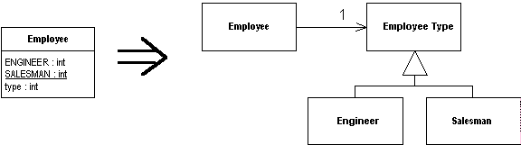

Replace Type Code with State/Strategy
You have a type code that affects the behavior of a class, but you cannot use subclassing.
Replace the type code with a state object.

For more information see page
227
of Refactoring
| Refactoring Home | | Alphabetical List |